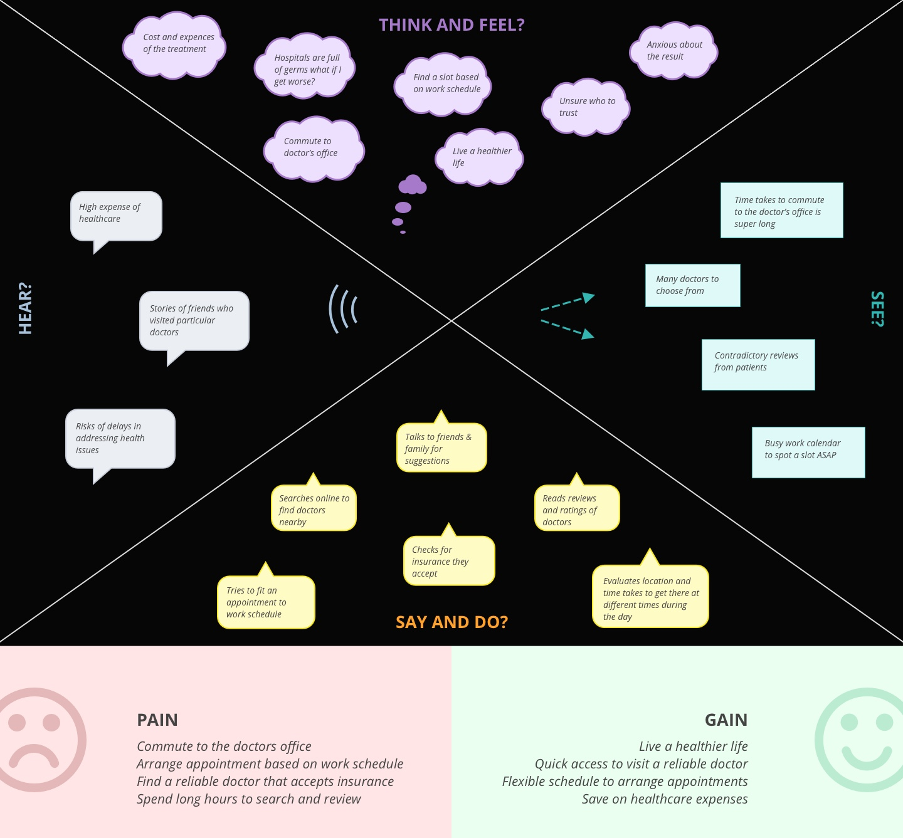
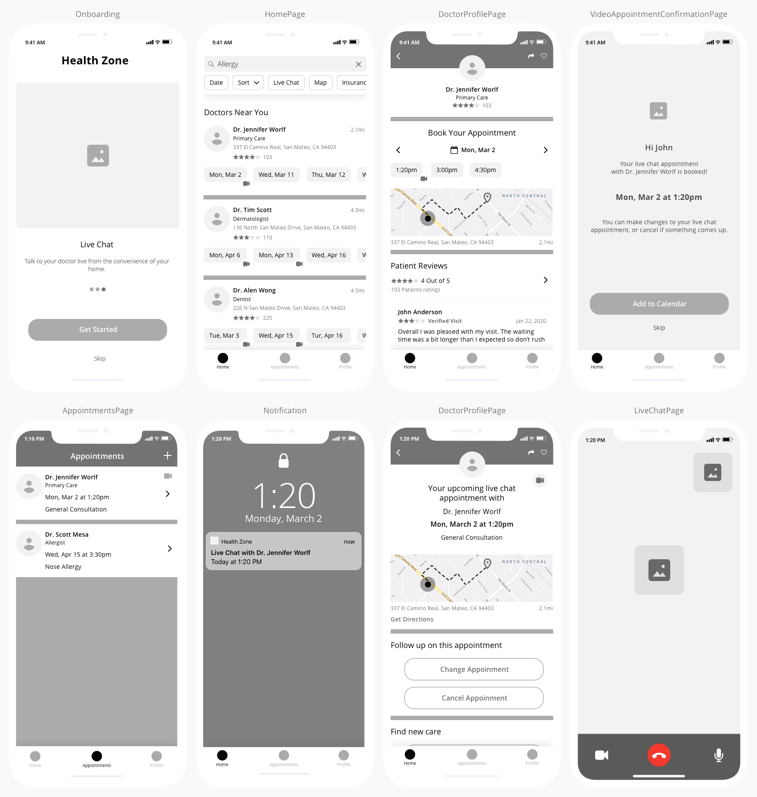
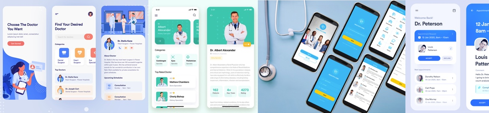

Health Zone
A Patient-facing mobile app focused on virtual care
On 7th Apr 2020 Zocdoc implemented the same feature in their app
Overview
Health Zone is a concept design challenge that I tackled to enable anyone, anywhere video chat with an expert in virtually any field.
Problem
In today's busy life, It is easy to ignore health issues. The hassle to allocate time finding the right expert, scheduling appointments and traveling to the physical office prevents many individuals from seeing a doctor that can cause serious outcomes.
Solution
Health Zone is a mobile app concept that aims to connect patients and primary care professionals through video chat to:
- Introduce virtual care so that patients could be seen by doctors from the convenience of their homes
- Find and make appointments easily
- Have a seamless flow as if they are meeting in-person
My Role
Product Designer
Timeline
3 weeks (2020)
Tools
Pen & Paper, Sketch, Figma
My Approach
1 Research
- User Interviews
- Empathy map
- User Flows
2 Design
- Paper Sketches
- Mid-Fidelity Wireframes
- Branding
- Initial High-Fidelity Mockups
- Interactive Prototype
3 Evaluate
- Usability testing & Design Iteration
- Final Mockups
- Final Prototype
- Project Learnings
Research
User Interviews
I conducted informal interviews with people I knew to see how they choose doctors, book appointments, and visit their doctors. My goal was to understand their pain points and discuss my concept to see how they react.
Key Takeaways
- They usually schedule appointments early morning or during their lunch hour to avoid taking time off
- Doctors that are referred by friends/family are highly trusted
- Ratings and reviews are other factors that help them choose a doctor to visit
- Doctor offices and hospitals are full of germs and contagious which sometimes make them avoid seeing a doctor
By providing virtual care to patients, many of these issues can be eliminated to a certain extent.
Empathy Map
I created an empathy map based on my findings during the interview.
User Flows
To create the structure of Health Zone app and make sure all the flows are as linear as possible I created following user flows for each interaction:
Design
Paper Sketches
Focusing on the core feature of the app for video chat, I sketched the initial wireframes of Health Zone using pen and paper. My goal was to revise as much as possible before moving to the actual high-fi mockups to save time.
Mid-Fidelity Wireframes
After several refinements to my hand-sketches, I created mid-fidelity wireframes to create the foundation of high-fi mockups.
Branding
I created a mood board to explore what are the main colors that are used for health-based applications. Based on my exploration, green and blue were the common prominent colors used in the field of healthcare because of their calming, and stability associations.
I created the following elements for the UI and designed a logo for the app:

Initial High-Fidelity Mockups
I quickly turned my mid-fidelity wireframe to initial high-fidelity UI mockups using Sketch. I used free illustrations and icons from the resources online for this project.
Interactive Prototype
I created a prototype using Figma to test the initial app with the participants I interviewed at the beginning of this project.
Evaluate
Usability Testing & Design Iteration
Based on the usability test I captured some key insights that helped me revise the user interface.
Text color contrast issue
Some users didn’t see the white “Skip” text on the appointment confirmation screen. I changed the color of the text to better meet accessibility standards and make the text legible.
Before
After
Changed the text color to improve legibility
Confusion to join the video call
Most of the users didn’t notice the green camera icon to tap and join the call.
Before
After
I created this step to indicate that the call is not available yet
When it’s time to join the call the camera icon turns green and the CTA appears
Lack of feedback while patients waiting for the video call to start
Some of the participants mentioned how they would know if the doctor is on at the same time that they have joined the call which makes me create a quick feedback screen to indicate the joining status of the doctor.
Before
After
Communicating feedback to the patient while waiting for the doctor to join
Access recording of the session
I’ve added an extra step to provide recording of the session along with a quick way to book for a future session. Here are some of the assumptions that led me to create this step:
- Access recording will help to review key points that may be missed during the conversation
- It will help to capture doctor’s advice without paying for another session (saving money which was one of the pain points of the users)
- If there is a need for a follow-up session per doctor’s advice, the patient can make that arrangement immediately after the session which avoids forgetting to do so if postponed to a later time
Final Mockups
Based on the feedback I captured and the revisions I made to the mockups I created the following final view of all the screens for the Health Zone app:
Final Prototype
I revised the prototype based on the latest tweaks I made to the mockups.
Project Learnings
This project was an interesting challenge considering that I haven’t tackled a problem in the healthcare industry before. I always wanted to address some of the issues in this area based on my experience and the things I read and heard online which initiated this project.
Although my deliverables meant to be explorations rather than fully fleshed-out solution, I strived to leverage the tech capabilities at hand to address the pain points of today’s busy life and its impact on our health.
The scope of the project relies on some assumptions, my instinct, and light user interviews/testings, but if I had more resources I would have loved to dig deeper into the needs and behaviors of Health Zone users.